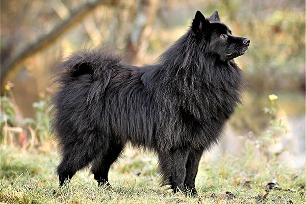

Our pet purchase process is straightforward. First, browse through our available pets for sale or adoption. Once you find a furry friend you're interested in, you can either make a purchase directly. Follow the on-screen instructions to complete the necessary forms, and if needed, schedule a meet-and-greet with the pet. After successful completion of the process, you can look forward to welcoming your new companion home
We strive to provide comprehensive care information for each pet listed on our site. You'll find details about their dietary needs, exercise requirements, grooming tips, and any specific health considerations. Additionally, all our pets undergo thorough health check-ups before being listed, and relevant medical records will be shared with you upon adoption or purchase. Please familiarize yourself with our policies regarding returns, health guarantees, and any other pertinent information.
Yes, we do offer shipping for pets to ensure a smooth adoption or purchase process, especially for those unable to pick up their pets in person. We adhere to all legal requirements and ethical standards related to pet transportation. Our team works closely with reputable carriers to ensure the well-being and safety of the pets during transit. It's important to check the specific shipping policies and legal requirements in your region before finalizing the purchase or adoption.
To ensure compatibility, we encourage potential pet owners to carefully read the pet profiles, consider their lifestyle, and possibly arrange a meet-and-greet. Our customer support team is here to assist you throughout this process.
Welcome Hooman!
Find your perfect companion and
let the furry adventures begin! üêæ
Cats
Dogs
Other animals
Shelter
Find Your New Best Friend
Browse pets from our network of 15000 shelters and rescues
Adoption avaliable nearby

German Spitz
The German Spitz is always attentive, lively and exceptionally devoted to his owner. He is very teachable and easy to train. His distrust towards strangers…
Burmese cat
The Burmese cat is a breed of domestic cat, originating in Burma, believed to have its roots near the Thai-Burma border and developed in the United States ...
Dachshund
The famously long, low silhouette, ever-alert expression, and bold, vivacious personality of the Dachshund have made him a superstar of the canine …
Velvet spider
Velvet spiders (family Eresidae) are a small group (about 100 species in 9 genera) of spiders almost entirely limited to the Old World, with the exception ...
Ragdoll
The Ragdoll is a breed of cat with a distinct colorpoint coat and blue eyes. Its morphology is large and weighty, and it has a semi-long and silky soft coat ...
Birman
The Birman , also called the "Sacred Cat of Burma", is a domestic cat breed. The Birman is a long-haired, colour-pointed cat distinguished by a silky coat, ...
'
Dog Adoption Articles
Learn more about caring for your new dog
Guide to Caring for Your Newly Adopted Dog
Introduction:
Bringing a new dog home is an exciting adventure, but it comes with responsibilities. This guide will help you navigate the journey of caring for your furry friend, from adoption to building a strong bond.
Choosing the Right Dog:
Research breeds, visit shelters, and choose a dog that fits your lifestyle. Consider size, energy levels, and temperament to find a good match.
Preparing Your Home:
Dog-proof your space, provide essential supplies, and create a comfortable environment. Designate a quiet spot for your dog to feel secure.
Nutrition and Health:
Consult with a vet for a proper diet plan and regular check-ups. Keep your dog active for a happy and healthy life.
Training and Socialization:
Use positive reinforcement for basic obedience. Socialize your dog to different environments and people to ensure good behavior.
Grooming and Hygiene:
Regular grooming, bathing, and dental care are essential for your dog's well-being. Keep your dog clean and healthy.
Mental and Physical Exercise:
Keep your dog mentally stimulated with toys and activities. Regular exercise is crucial for their overall well-being.
Patience and Understanding:
Building a strong bond takes time. Be patient, offer positive reinforcement, and spend quality time bonding with your new companion.
Conclusion:
Caring for your new dog is a journey filled with love and joy. By following these guidelines, you'll create a happy and healthy life for your furry friend, fostering a lasting and meaningful relationship.
Cat Adoption Articles
Helpful insights on what to expect.
Guide to Caring for Your Newly Adopted Cat
Introduction:
Embarking on the journey of adopting a new cat is an exciting venture, but it comes with certain responsibilities. This guide is designed to assist you in navigating the path of caring for your feline companion, from the initial adoption process to building a strong and lasting bond.
Choosing the Right cat:
Research different cat breeds, visit shelters, and select a cat that aligns with your lifestyle. Consider factors such as temperament, activity level, and any specific needs the cat may have.
Preparing Your Home:
Make your home cat-friendly by removing potential hazards and providing essential supplies. Create a cozy space where your new cat can retreat to feel safe and secure.
Nutrition and Health:
Schedule a visit to the vet to establish a proper diet plan and set up regular check-ups. Ensure your cat stays active for optimal health and happiness.
Training and Socialization:
Utilize positive reinforcement techniques for basic training and encourage positive interactions with various environments and people to promote good behavior.
Grooming and Hygiene:
Establish a regular grooming routine that includes brushing, ear cleaning, nail trimming, and dental care to keep your cat clean and healthy.
Mental and Physical Exercise:
Keep your cat mentally stimulated with toys and activities. Regular play and exercise are essential for their overall well-being.
Patience and Understanding:
Building a strong bond with your new cat takes time. Be patient, offer positive reinforcement, and spend quality time bonding with your feline friend.
Conclusion:
Caring for your newly adopted cat is a fulfilling journey filled with love and joy. By following these guidelines, you'll create a happy and healthy life for your furry companion, fostering a meaningful and lasting relationship.